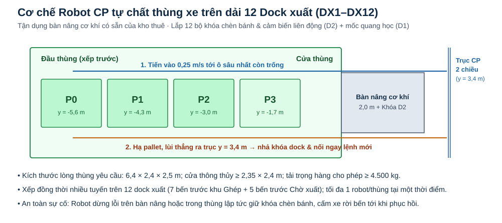

Mô phỏng điều phối theo giây trên hành lang chính 2 chiều tách biệt XN/CP, nối chuyến trực tiếp không chạy rỗng về bến và tự chất hàng đồng thời trên dải 12 dock xuất.
Mặt bằng và vị trí thiết bị
Cam: xe nâng XN (kệ 3 tầng, hỗ trợ chéo A⇄B) · Xanh: robot CP · Đỏ: xe dừng lỗi · Chấm đậm: ô có pallet · Vòng tròn: ô đã đặt chỗ
Thời gian, công việc và hỗ trợ chéo từng xe
| Xe | Trạng thái | Công việc | Pin | Làm việc (phút) | Sạc (phút) | Chờ (phút) | Chuyến chéo A⇄B |
|---|
Robot tự chất xe đa dock
Xem lớn sơ đồ chất thùng xe
Dải 12 dock xuất xếp hàng đồng thời theo tuyến. Mỗi thùng chỉ cho phép 1 robot vào tại một thời điểm; lùi khỏi cửa là giải phóng khóa dock và nối ngay nhiệm vụ kế tiếp.